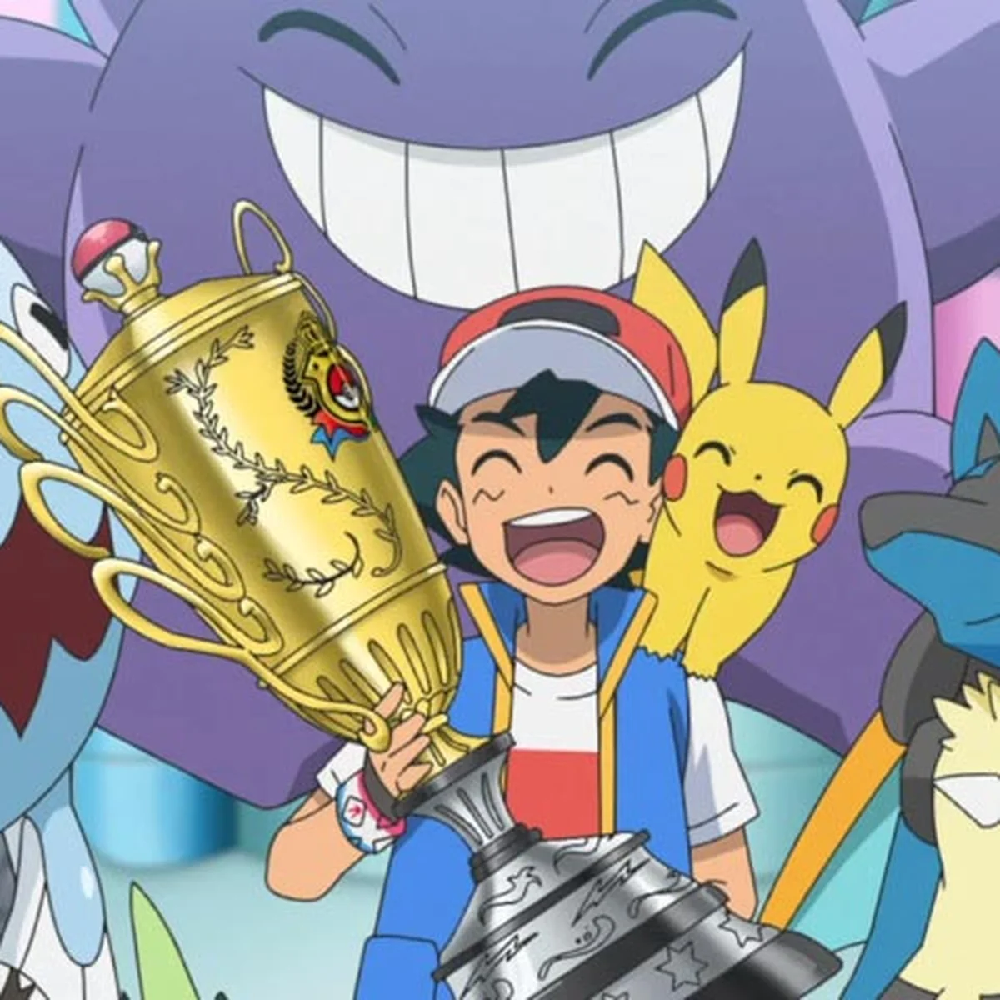

Cynthia Wiki
Dawn Wiki
N Wiki
Misty Wiki
Brock Wiki

Ash Ketchum, conhecido no Japão como Satoshi, é um dos personagens mais icônicos da cultura pop mundial. Protagonista da série de anime Pokémon por mais de 25 anos, sua trajetória é uma jornada épica de perseverança, amizade e a busca incessante por realizar um sonho de infância.
Ash nasceu na pacata cidade de Pallet, na região de Kanto. Desde muito jovem, ele nutria um desejo ardente de se tornar um "Mestre Pokémon". No dia em que completou 10 anos, ele deveria escolher um dos três Pokémon iniciais do Professor Oak (Bulbasaur, Charmander ou Squirtle). Devido ao seu atraso para chegar ao laboratório, todos os iniciais já haviam sido entregues. Como consolação, o Professor Oak lhe deu um Pikachu — um Pokémon elétrico de temperamento difícil que se recusava a entrar em sua Pokébola e não demonstrava afinidade inicial com seu treinador. Esse começo conturbado foi o alicerce da amizade mais duradoura e famosa da história dos animes.
Ash Ketchum é, sem dúvida, um dos maiores ícones da cultura pop, tendo servido como o protagonista absoluto da franquia Pokémon por mais de 25 anos. Desde sua estreia em 1997, sua trajetória acompanhou gerações de fãs, mostrando o crescimento de um treinador que aprendeu que o verdadeiro sucesso vai muito além da vitória. Ao longo de sua longa jornada, Ash foi o personagem central de todas as principais fases do anime, incluindo: Série Original (Kanto e Johto), Advanced Generation (Hoenn), Diamond & Pearl (Sinnoh), Best Wishes! (Unova), XY/XYZ (Kalos), Sun & Moon (Alola) e, por fim, Jornadas (Pokémon Journeys). Com o encerramento oficial de sua história em 2023, Ash deixou um legado inestimável de determinação e amizade, eternizando-se como o garoto de Pallet Town que provou que, com persistência, todos os sonhos podem ser alcançados.
Ash Ketchum sempre trilhou um caminho único no mundo Pokémon. Ao contrário de treinadores focados apenas em estatísticas ou na captura dos espécimes mais raros, a filosofia de Ash é fundamentada na empatia e no vínculo emocional.
Para Ash, a captura raramente é um ato de "caça". Na maioria das vezes, seus Pokémon se tornam membros da equipe porque ele os salvou de situações perigosas, demonstrou bondade ou porque ambos sentiram uma conexão imediata. Ele não escolhe Pokémon por serem "meta" ou inerentemente superiores; ele os escolhe porque acredita no potencial deles e, mais importante, porque quer crescer ao lado deles.
Ash é conhecido por táticas pouco convencionais. Ele frequentemente utiliza o ambiente ao redor ou as características únicas de um Pokémon (como usar a velocidade do Pikachu ou a força física do Snorlax) de formas que surpreendem seus oponentes.
Ele raramente comanda com uma rigidez militar. Em vez disso, ele confia na intuição de seus Pokémon. Essa sintonia profunda frequentemente permite que eles superem desvantagens de tipo ou adversários teoricamente mais fortes através da pura força de vontade e trabalho em equipe.
Ao longo de décadas, Ash formou um elenco vasto, mas alguns parceiros se destacam não apenas pelo poder, mas pela história que compartilham com ele
Pikachu: O parceiro de uma vida. Não é apenas o seu Pokémon principal, mas o seu melhor amigo. Sua conexão é o pilar de toda a jornada de Ash.
Charizard: Um dos seus Pokémon mais poderosos, cuja trajetória de um Charmander abandonado a um Charizard leal e imbatível simboliza perfeitamente o crescimento de Ash como treinador.
Greninja: Representa o auge do vínculo entre treinador e Pokémon, atingindo a forma "Ash-Greninja", onde o Pokémon canaliza os sentimentos e a energia de Ash em batalha.
Infernape: Conhecido pela sua determinação feroz, o Infernape de Ash é o exemplo máximo de resiliência, superando traumas do passado para se tornar uma força imparável.
Lucario: Em suas aventuras mais recentes, Lucario se tornou um pilar de força e conexão espiritual, sendo capaz de sentir a aura de Ash e lutar em perfeita sincronia com ele.
Snorlax: Frequentemente subestimado, este gigante é um dos pilares de defesa e resistência na equipe de Ash, surpreendendo adversários com sua velocidade e repertório de golpes variados.
Tauros: Não podemos deixar de mencionar os iconicos 30 Tauros do ash, sendo uma alivio comigo muito caracteristico do anime
A trajetória de Ash Ketchum é marcada por uma evolução notável. Embora tenha ficado conhecido por anos como o treinador que "quase chegava lá", o seu histórico é repleto de marcos significativos que provam sua competência e genialidade como treinador Pokémon.
Antes de conquistar as ligas regionais tradicionais, Ash provou seu valor nas Ilhas Laranja. Ao vencer Drake, o líder supremo da Liga Laranja, com seu Charizard e Pikachu, Ash demonstrou pela primeira vez que tinha o talento estratégico necessário para enfrentar os melhores do mundo, consolidando sua confiança como um treinador capaz de grandes vitórias.
Um dos feitos mais subestimados de Ash foi o desafio da Battle Frontier. Ele foi um dos poucos treinadores na história a derrotar todos os sete "Cérebros da Fronteira" (Frontier Brains), culminando com a vitória sobre o lendário Brandon. Este feito foi um divisor de águas, pois exigiu de Ash não apenas força bruta, mas uma maturidade tática e a capacidade de adaptar sua equipe a diversos estilos de combate.
Após anos sendo derrotado nas fases finais de ligas regionais, Ash finalmente atingiu o topo em Alola. Ao vencer a Liga Pokémon de Alola, ele se tornou o primeiro campeão oficial da história daquela região. Este título foi um marco histórico: ele não apenas venceu um torneio, mas estabeleceu um novo padrão de excelência, provando que sua filosofia de cuidado e treino superava os métodos tradicionais de muitos rivais.
A maior e mais definitiva conquista de Ash foi sua vitória no Torneio dos Oito Mestres, dentro da Série Jornadas. Ele competiu contra os melhores treinadores do planeta — incluindo campeões como Cynthia (Sinnoh), Steven (Hoenn) e Lance (Kanto/Johto). Ao derrotar Leon, o invicto Monarca de Galar, na batalha final, Ash Ketchum foi coroado, oficialmente, como o Treinador Pokémon mais forte do mundo.